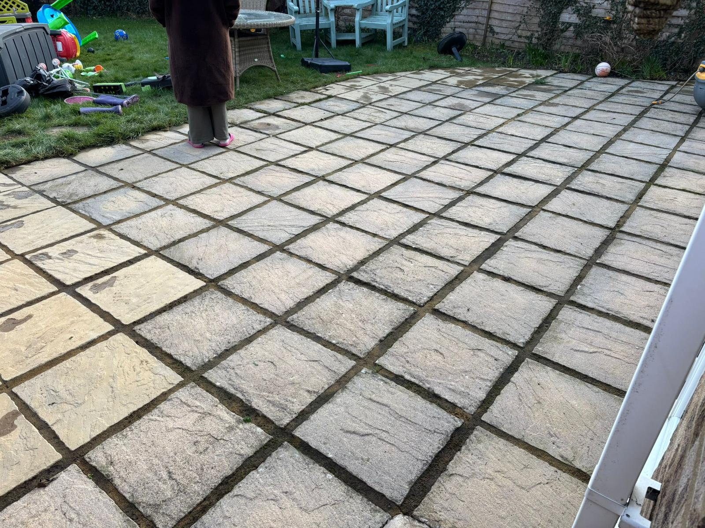
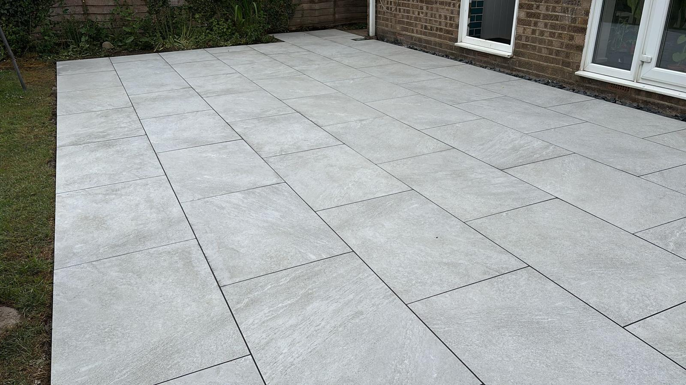
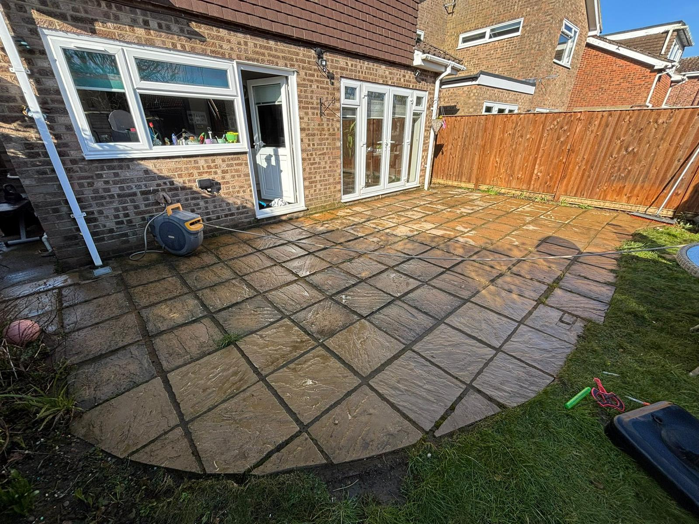
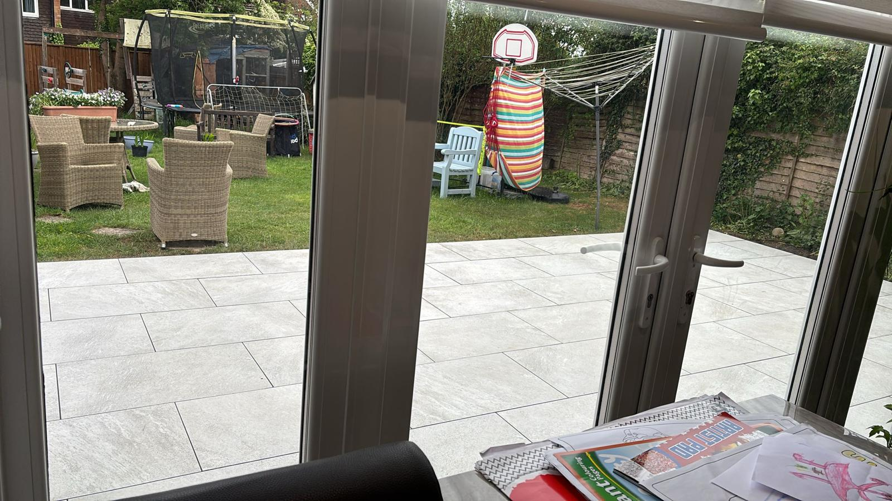
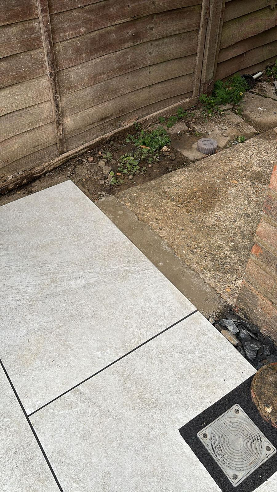
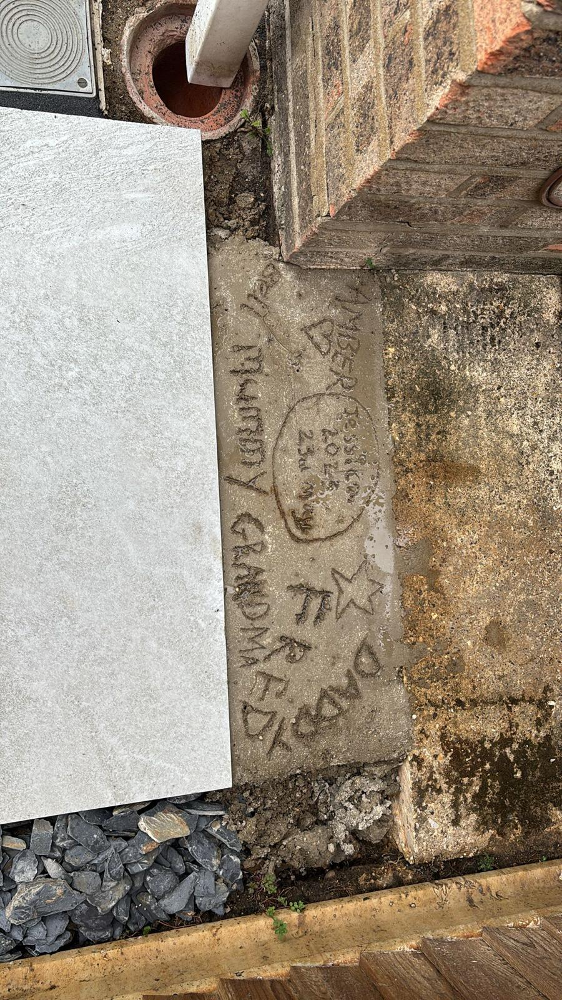
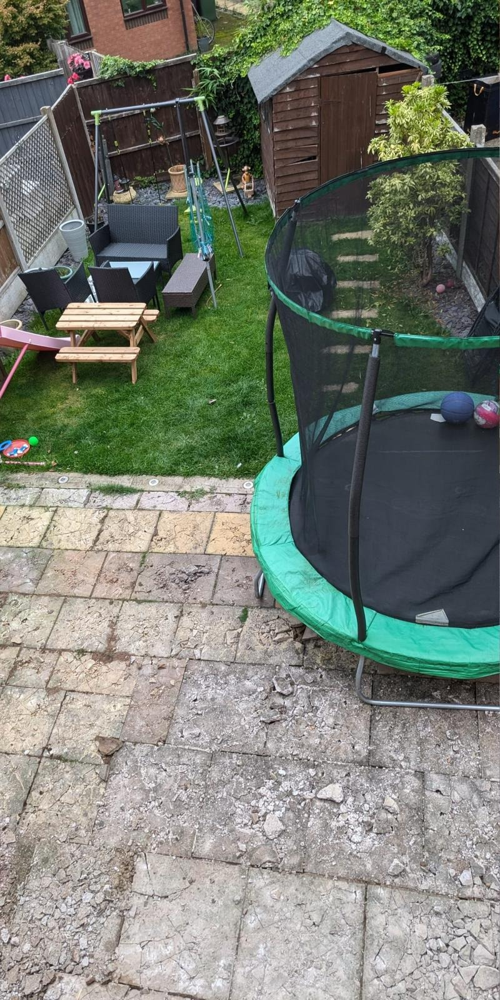
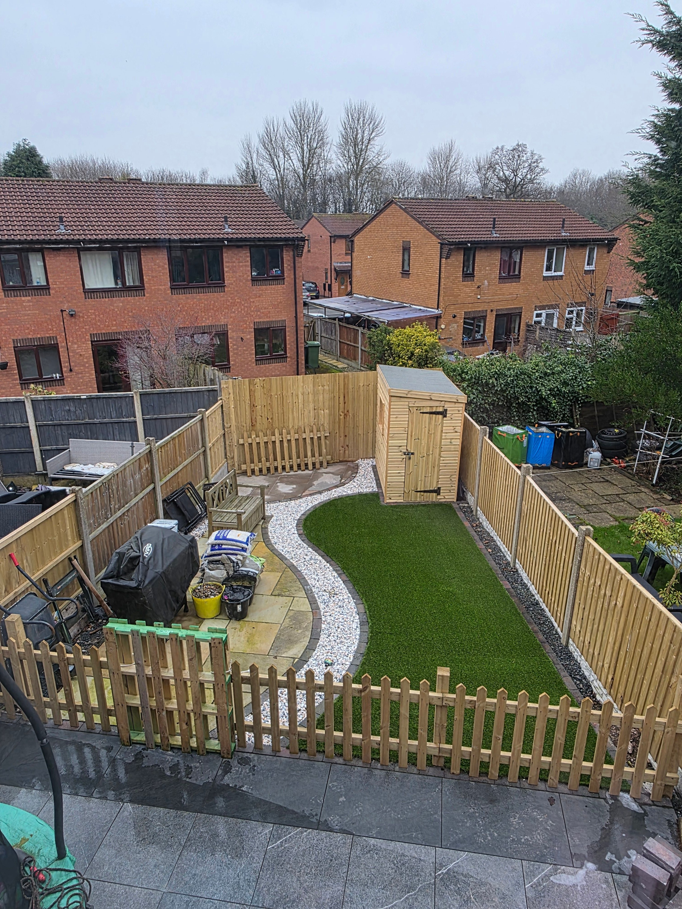
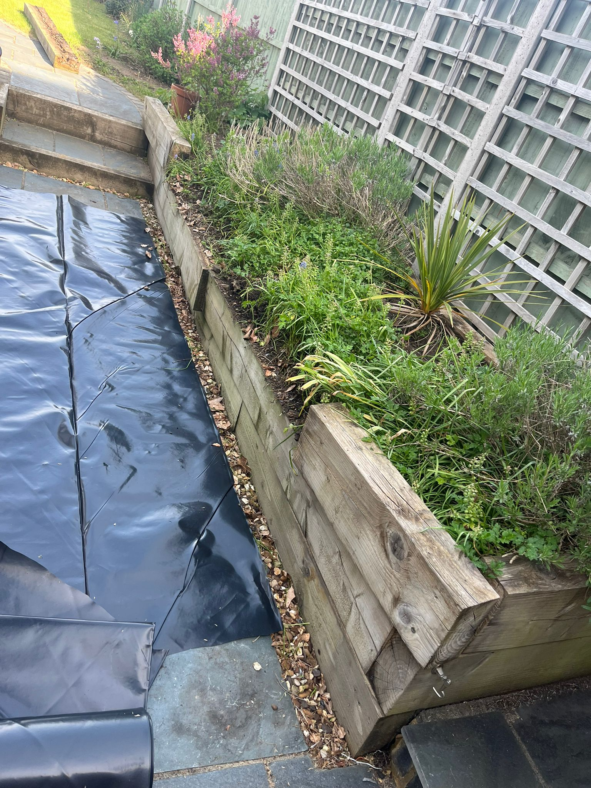
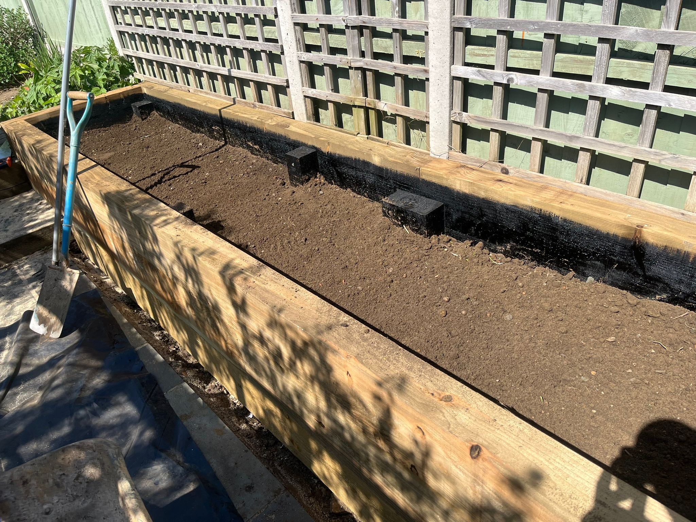

Phase 1 – Rip‑out & Prep: Removed the old patio and lawn, excavated to sound sub‑grade.
Phase 2 – Rebuild Base: Compacted Type 1 stone to perfect levels with the whacker plate.
Phase 3 – Bed & Lay: Laid to a level finish.
Phase 1 – Strip Surface: Skimmed turf and soil to allow for base.
Phase 2 – Stone & Whack: Stoned base, transferred levels across patio area & whacked to solid level.
Phase 3 – Lay & Grout: Slurry‑primed every slab and laid to a laser level finish, spaced them evenly & finally grouted and conreted exisiting pathways.
Phase 1 – Clear Site: Stripped out old beds, saving existing topsoil for reuse.
Phase 2 – Build Structure: Constructed new treated‑sleeper walls, black‑jacked interiors for rot protection.
Phase 3 – Refill & Finish: Screeded soil to remove debris, enriched and back‑filled—ready for planting.
Tell us about your space and get a free, no‑obligation quote.
Contact Us